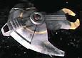

Unione Cardassiana - Classe Hideki |
|
|
|  |
Le navi di classe Hideki sono piccole fregate con pochi complementi di
equipaggio.
Dimensioni: 86 metri di lunghezza, 60 metri di larghezza, 12 metri di
altezza
Equipaggio: 78
Armi: disgregatori a onda spirale,
phaser
| [Senza Nome] Nave pattuglia comandata da Gul Evek. | Tribunal |
| [Senza Nome] Almeno quattro navi, una delle quali distrutte. | Call to Arms |
| [Senza Nome] Due navi | Behind the Lines |
| [Senza Nome] Almeno otto navi, due delle quali distrutte, erano parte della flotta che ha difeso Deep Space Nine. | Sacrifices of Angels |